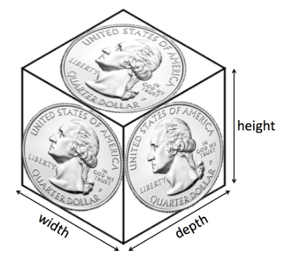

John stumbled as his feet landed on the cobbled floor of the agora. He quickly regained his balance and looked around to ensure that nobody noticed his sudden appearance, seemingly out of nowhere. But everyone's attention was focused on an argument across the vast marketplace, where a fishmonger and a confectioner were shouting at one another.
"He's done it! I tell you," the crotchety fishmonger shouted. "He's ruined the ceremony!"
Several of the onlookers shouted their agreement. John made his way over to the crowd. This argument was clearly related to his task and he thought he could, perhaps get more details so he might figure out exactly what he was to do.
"No, no. The goldsmith is innocent! He wouldn't dare risk the wrath of the gods," the confectioner, with flour caught in his beard, replied in a gentler voice. There was a murmur of agreement with the crowd. Apparently nobody was certain one way or the other.
"How could you be so naïve? It was the money. The gold. He couldn't resist the chance to steal some wealth for himself."
The argument continued, until all of a sudden the entire agora went silent. A lone man walked across the agora and straight through the crowd. He didn't say a word, but the group parted as he passed, giving him a wide berth as he passed. And when he had turned the corner, the cluster still gathered dispersed. The argument was over.
John was left standing where the crowd had been just moments before when the fishmonger called out to him, "Hey! Boy! What are you doing standing there? Looking to steal something?"
"What? I...no. I'm just...," John had no real answer. He had a general goalto stop the turmoil in Syracuse--but he had no idea where to start.
"You're just what? I see what your doing. And I'm telling you, you try to steal my fish and I'll have your hand," the fishmonger threatened.
"You have no idea what you're talking about. Phileas here is my new assistant. He helps me keep inventory records. You know I'm bad with numbers," the confectioner said from behind the fishmonger, with a wink at John as he came up with a fake name. "Come on Phileas. I have some work for you."
John had no choice but to follow the confectioner. It certainly seemed like a better option than staying behind with the accusatory fishmonger. Not to mention, the confectioner's stand was sure to smell better.
The confectioner returned to work, ignoring John idling right behind him. With nothing better to do, John asked, "So what was that argument about?"
"What are you still doing here?"
"Well, I was hoping you could tell me more about the argument you were having with the fishmonger."
"And I was hoping my inventory records would magically do themselves. But sorry, kid. I can't talk to you and do math at the same time. I was telling the truth when I said I was bad with numbers."
"Alright. Then how about this," John proposed. "If you show me what to do, I'll do your inventory for you, and when I'm done, you answer all my questions about the argument."
The confectioner let out a guffaw. "You have yourself a deal....say, what's your name."
John answered.
"John. Weird name. Not a Greek one. Where's it from? Well, guess that doesn't matter. I'm Sosibios," the confectioner introduced himself.
Sosibios continued, "Alright John, I can keep track of most everything I sell in my head. But the sesame candies always sell fast and I can never keep track of how many I have. You see that box over there," the confectioner gestured to a large crate. "It's filled with sesame candies and I need to know how many there are. The number doesn't have to be exact; a good approximation 'll do. But if you count that real quick and let me know what's left, I can tell you what I know about the crown, although I'm warning you, it isn't much."
Looking at the crate, John noticed it was about the size of a shoe box, and each cube-shaped candy had the width, height, and depth that was about the same as the diameter of a quarter. The crate was about half full. John decided that instead of counting the candies, he'd approximate how many could fit in the box.

He first figured out how many candies could fit along the width of the box and how many could fit along the depth, if each candy has a width and depth about equal to the diameter of a quarter.
He then multiplied these values together to determine how many candies it would take to create a single layer in the bottom of the box.
But there are several layers of candy within the box, so John counted how many candies he would fit, one on top of another, in the height of the box, if each candy has a height about equal to the diameter of a quarter. This is the number of layers the box can hold. So he took the number of layers in the box he just found and multiplied this by the number of candies in a layer that he'd found before. This is the total number of candies the box could hold.
But John remembered the box was only half full, so he divided the total number of candies the box could hold in two to estimate the number of candies remaining.
John went to Sosibios and told him the answer.
Enter your answer
How many candies are left? Use a shoebox and a quarter to estimate.